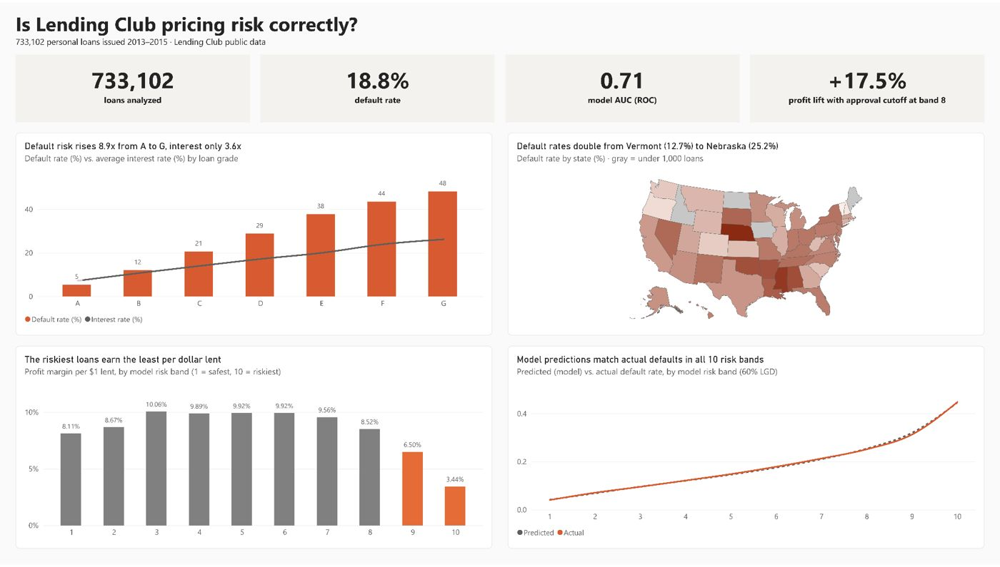

I'm a second-year Honours Data Science student at York University, in the Business Stream with the Schulich School of Business. I use data to answer business questions, and I explain the answer so people can act on it. I grew up in Colombia, moved to Toronto with my family, and work in English and Spanish. I'm looking for a Summer 2027 data or business analyst co-op in Toronto, especially in banking and finance. Feel free to get in touch.
York University · Schulich Business StreamCredit-risk project · 733K loansBloomberg Market Concepts (in progress)English · Spanish
Analyzing
I clean large datasets, query them in SQL and look for the pattern that answers the business question. In my Lending Club project I took 2.26 million loans down to the 733,102 that could answer it fairly.
Modelling
I build and validate models in Python, then turn them into numbers a business can use, like expected loss, approval cut-offs and stress tests in Excel.
Communicating
A finding nobody understands is a finding nobody uses. I write up results, build dashboards and present recommendations for people who didn't run the query.
Featured Projects

Credit Risk Analysis: Is Lending Club Pricing Risk Correctly?
Python · pandas · scikit-learn · SQL · Excel · Power BI
From 2.26M raw loans to a recommendation a bank could act on. A logistic regression (AUC 0.71) and an expected-loss model show the riskiest loans earn the least; cutting the riskiest band raises net profit by 17.5%.
A credit-awareness campaign for young Canadians built on Equifax and FCAC data: social posts, a website and a pitch to bank executives on why missed payments among young borrowers are their business problem.
“Last semester I had five courses and one job, and I never submitted any assignment late.”
Cover Letter: Applying to Be a Project Partner
WRIT 2202 · Professional writing
My first draft was full of promises. In revision I replaced them with evidence, which became my biggest lesson in the course: proof persuades, promises don't.
Your next project
SQL Analytics Project
SQL · window functions · CTEs
Practising window functions and CTEs on DataLemur. Replace this card with your next project when it's ready.
Skills
Data & technical
SQL: JOINs, GROUP BY/HAVING, aggregates, NULLs; learning window functions and CTEs
Networking through LinkedIn and York/Schulich events
Bilingual: English and Spanish
Professional
Five courses plus a job, zero late submissions
IT Assistant, Schulich School of Business
Software testing on uTest
Reflections
Before WRIT 2202, I thought the hard part of data science was the math and the code. This course showed me that half of it is getting the result across.
Start with the audience
I ask who is reading and what they need before I write a README, an email or a slide.
Evidence beats promises
That's why this portfolio links to real work instead of listing adjectives.
Framing matters
The same result can be clear or confusing depending on how it's framed.
Feedback is a skill
Reviewing classmates on Kritik made me a better reviewer of my own work.
The most valuable skill I'm taking with me
Presenting information the right way for the person in front of me. I'm bringing that into every write-up, coffee chat and interview.
Fun facts
I like reports that end with a number and a recommendation, not “some trends were observed.”
I'd rather finish my part early than chase teammates at 11:58 p.m.
Outside of data: finance news, food and travel.
Let's connect
Looking for a Summer 2027 co-op or internship in data analysis, business analysis or finance in Toronto.